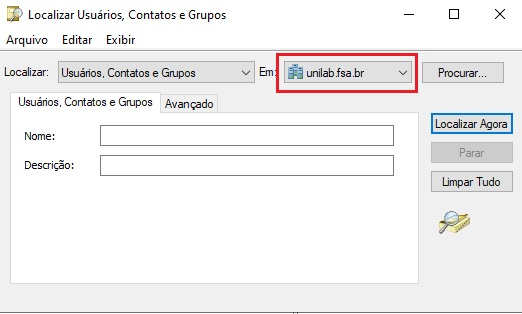

Para redefinir a senha da plataforma Moodle, Wi-Fi e da rede dos computadores dos labarotórios de informática para alunos, professores e funcionários é necessário acessar o servidor unilab.
Ao alterar a senha do usuário no servidor as três senhas serão redefinidas, pois estão atreladas ao unilab.
Dentro do servirdor no menu do Windows clique em ferramentas administrativas > Usuários e Computadores do Active Directory clique no ícone Localizar usuários 
Certifique-se que o campo "Localizar" está a opção Usuários, Contatos e Grupos e a opção "em" está unilab.fsa.br
Digite o nome completo do usuário ou RA e clique em Localiza Agora

Ao localizar o usuário clique com o botão direito sobre o usuário e clique na opção redefinir senha
Senha padrão é o CPF do usuário somente números, digite e confirme a senha. Certifique-se de habilitar a opção Desbloquear a conta do usuário e clique em OK
Passo 1: Criar e-mail Institucional
Acesse o adminstrador do gmail no canto esquerdo clique em diretórios e usuários e Adicionar Novo Usuário
Preencha os campos Infomações do Usuário
Insira Nome, Sobrenome. No campo E-mail principal digite o nome de usuário nome.sobrenome do usuário
OBS.: Caso o nome.sobrenome já esxita tente trocar por outro sobrenome do usuário
Em Unidade organizacional clique na opção professores
E insira a senha padrão para email institucional
OBS.: Após a criação do email é necessário inserir no grupo professores
Vá na aba Grupos clique em adicionar o usuário a grupos e na barra de pesquisa digite professores e selecione professores@fsa.br
No Totvs vá no menu no canto superior direito, clique em serviços globais e clique na aba Segurança e clique no ícone Usuários
Após abrir o filtro abaixo, conforme mostra a imagem, clique em fechar
Após fechar o filtro clique no ícone de "mais" para cadastrar um novo usuário
Irá aparecer a tela de cadastro. Conforme a imagem abaixo
No campo Usuário digite o nome.sobrenome
No campo Nome digite o nome completo do usuário
No campo E-Mail digite o e-mail institucional criado no primeiro passo
em Código de acesso selecione a opção Default
Deixe a opção selecionada Alterar senha no próximo login
No campo Senha digite CPF (Sómente números)
Deixar a opção Ativo selecionada
Em Início de Validade não deixar Sempre é Válido selecionado
Sempre deixe a data do último dia do ano seguinte, por exemplo na imagem a data de ínicio está 25/07/2025 então deve-se colocar na Expiração 31/12/2026
Vincular o usuário ao cadastro do funcionário:
No Totvs no menu RH/Folha de pagamento → Funcionários pesquise o usuário pelo nome
Clique no usuário pesquisado em Código de Usuário insira nome.sobrenome
Atribuir as seguintes Permissões para o usuário:
1 - Educacional → Gestão Bibliotecária → Clicar na aba Segurança → marque a opção 1 FUNDAÇÃO SANTO ANDRÉ e FSA_Portal e clique em Salvar
Clique em Anexo → Unidade do Usuário Corpore → Incluir → FUNDAÇÃO SANTO ANDRÉ → Biblioteca Comunitária Marcar Filial Padrão
2 - Educacional → Educacional → clique na aba Segurança → marque a opção 1 FUNDAÇÃO SANTO ANDRÉ → marque a opção FSA_Prof_S → Clique am Anexo → Usuário Filial → Incluir → Contexto Graduação → Permissão para acessar → Sistema e Portal
3 - RH → Folha de Pagamento → clique na aba Segurança → marque a opção 1 FUNDAÇÃO SANTO ANDRÉ → marque opção Holerite
4 - RH → Segurança e Saúde Ocupacional → marque a opção 1 FUNDAÇÃO SANTO ANDRÉ → marque opção Comum_V
Para criação do novo usuário é necessário os seguintes dados:
Habilitar as seguintes configurações
ATENÇÃO
Caso o e-mail principal nome.sobrenome esteja em uso, coloque outro sobrenome do usuário.
Caso o usuário já exista na instituição, trata-se de uma reativação de usuário apenas reative a conta do usuário
Para incluir novo usuário no Totvs acesse o menu → Serviços Globais → Usuários → Incluir novo
Preencha os campos
Caminho
Menu → RA → Folha de Pagamento → Funcionários → Filtrar por nome → Inserir o código
Preencha o campo Código do Usuário → nome.sobrenome clique Salvar e OK
Atribuir seguintes permissões
Criar o usuário
Preenchar campos
Propriedades do usuário
Mesmo procedimento para criação no Unifsa com algumas ressalvas
Utilize o modelo pronto do e-mail do suporte e substitua os dados pelo do novo funcionário
Primeiramente acesse o sistema E2doc
Atenção
Caso não encontre o aluno no Moodle e no Unilab, trata-se de um cancelamento de contrado. Ou seja, o aluno cancelou o contrato antes de ser criado os seus acessos institucionais. Neste caso, basta finalizar tarefa no E2doc
Dica
Após alterar e-mail segure Shift + Enter para atualizar
Volte ao E2doc e finalize a tarefa clicando em → Prosseguir
suporte@fsa.br